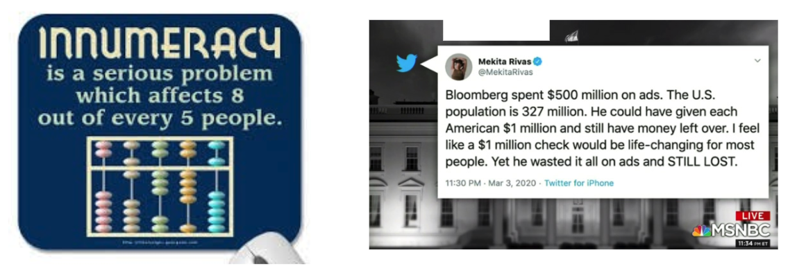

Lesson 2 - Reading Charts Without Getting Fooled
At the end of this lesson, you will be able to:
- Explain what data literacy means and why it matters in everyday life.
- Recognize five common ways charts mislead: truncated axes, cherry-picked time windows, counts without denominators, dual y-axes, and 3-D pie charts.
- List the questions worth asking before you trust any chart you see in a feed, a news story, or an ad.
Data literacy
You already know how to read words critically. If a stranger's post says "everyone agrees this is the best restaurant in Portland," some reflex in you asks: everyone? Who counted? Do they own the restaurant? That reflex is a big part of what it means to be literate. You're not just decoding the words, you're questioning them.
Data literacy is the same reflex pointed at numbers and charts: being able to read data, figure out where it came from, and question what it actually shows. You don't need to work in analytics for this to matter, because charts show up in your feed and in the news every day. Somebody made every one of those charts, and they chose what to include, what to leave out, and where the axis starts. Usually those choices are reasonable! But sometimes the person making the chart is hoping you won't look at them too closely.
And there is so much of this stuff. For a sense of how much data the world generates while you microwave a burrito, check out Domo's Data Never Sleeps 12.0 infographic, which counts the messages, searches, and streams that happen every minute. Every chart you see is somebody's summary of some slice of that flood. So how do you tell whether it's an honest summary? That's what the rest of this lesson is for.
When number-sense fails: two real examples
Before the chart tricks, a warm-up on plain numbers, because the failures can be spectacular:

The one on the left is a joke: “8 out of every 5 people.” The one on the right is not. In March 2020, that tweet was shown and read approvingly on MSNBC's The 11th Hour. Check the arithmetic: $500 million divided among 327 million people is about $1.53 each, not $1 million each (PolitiFact's fact-check has the details). To their credit, the anchor corrected it on air about fifteen minutes later, once someone ran the numbers. Now, the point isn't that the people on that show were unusually foolish. Nobody's number sense is automatic, including yours and mine, and a claim that sounds plausible can sail right past all of us. That's why checking has to be a habit. And with charts the habit matters even more, because you get the visual impression instantly, long before you'd ever get around to doing any arithmetic.
The chart-trick catalog
Here are five classics. The sneaky thing about all of them is that none of them needs fake data. Every one can be built from completely true numbers and still leave you believing something false.
1. The truncated y-axis
A bar chart works because the height of a bar stands for an amount. Start the y-axis somewhere other than zero and that stops being true. Say two food carts each sold about a thousand orders last month: Cart A sold 1,000 and Cart B sold 1,020, a 2% difference. Now draw the y-axis starting at 990. Cart A's bar is 10 units tall and Cart B's is 30 units tall, so Cart B's bar is three times the height for a 2% difference! Nothing was made up; the chart just cropped away the context. So whenever the difference between bars looks dramatic, check where the axis starts before you believe it.
In the wild: In 2012, Fox News showed what would happen to the top income-tax rate if the Bush-era tax cuts expired: it would go from 35% to 39.6%. The bars started at 34% instead of zero, so the second bar looked about five times taller than the first, for a change of 4.6 percentage points. (Storytelling with Data redraws it with a zero baseline, and the dramatic jump mostly disappears.)
2. The cherry-picked time window
A changing line can support very different stories depending on where the chart starts and stops. A gym that charts membership from January 2 to January 31 may show rapid growth; the same line drawn over three years may show a recurring winter bump (hello, New Year's resolutions) followed by a spring decline. When a chart shows a trend, ask: Why this window? What happens if we zoom out or shift the window?
This trick shows up in some very high-stakes arguments. For years, people arguing that global warming had "paused" liked to draw temperature charts that started in 1998. That year was unusually hot because of a strong El Niño, a natural warming swing in the Pacific Ocean. Start a chart at a spike and the years right after it look flat by comparison, even though the long-term climb kept going. Zoom out to several decades and the trend is unmistakable, even though not a single number in the data changed. (Inside Climate News has a good summary of why researchers rejected the "pause.")
3. Counts without denominators
"25 dog breeds have a maximum life span of 15 years!" Is that a lot? You literally can't know until you ask: 25 out of what? Out of 30 breeds it's a dominant pattern. Out of 105 (the actual dataset you'll meet in a few lessons) it's about 24%. Out of 10,000 it's a rounding error. This one is everywhere in the news, too. "City A had 500 burglaries, City B only 50" sounds damning until you learn City A has 20 times as many people, which makes it the safer city per person. So whenever you see a count, ask for the rate: out of how many?
4. The dual y-axis
Some charts plot two lines with two different y-axes, one scale on the left and another on the right. Because whoever made the chart picked those two scales separately, they can make the lines look like they cross, come together, or track each other closely, just by stretching one scale or the other. Plot a company's revenue (left axis, in millions) against customer complaints (right axis, in dozens), and changing either scale changes what the relationship seems to be. So if you see two lines on a dual-axis chart moving together, or crossing at some dramatic moment, go look at both scales before you believe it means anything.
In the wild: At a 2015 congressional hearing, a member of Congress presented a chart about Planned Parenthood with two lines, one for cancer screenings and one for abortions, that appeared to cross dramatically. The two lines were drawn on different scales (one in the millions, one in the hundreds of thousands), and neither axis was labeled. The numbers themselves were real, but the crossing was an illusion. PolitiFact rated the chart "Pants on Fire," and a data-visualization expert it interviewed called it deeply misleading.
5. The 3-D pie chart
Pie charts are already hard to read, because people are much better at comparing lengths than angles. Tilt one into 3-D and the slices toward the front get drawn physically bigger, so a 20% slice in front can look bigger than a 30% slice in back. What was supposed to be decoration ends up changing what the chart seems to say, even when every label on it is correct.
In the wild: When Steve Jobs presented Apple's share of the U.S. smartphone market in 2008, the slide was a 3-D pie. Apple's 19.5% slice sat at the front, and critics pointed out that it looked bigger than the 21.2% "Other" slice behind it (Daring Fireball collects the back-and-forth). The numbers were right there on the slide, but how many people in the audience stopped to compare 19.5 and 21.2 when the picture was telling them something else?
Bonus: the upside-down axis
One more, because it's such a famous example. In 2014, a Reuters graphic about gun deaths in Florida, before and after the state's "Stand Your Ground" law, drew its y-axis with 0 at the top and the larger numbers toward the bottom. So when the line went up, deaths were going down, and when deaths rose sharply after 2005, the line appeared to drop. Glance at it the normal way and you'd conclude the opposite of what the data said. (Pacific Standard explains the problem.) It's a good reason to read the axis labels before you let the shape of the line tell you anything.
These examples came from TV news, a congressional hearing, a product launch, and a wire service, and they were pushing all sorts of different conclusions. Chart crimes don't belong to any one side of any argument! If you want to see lots more, Wikipedia's article on misleading graphs has a whole gallery of them, with explanations of what went wrong in each one.
One more thing to file away
There's a sixth trap, big enough to get its own lesson: two things moving together doesn't mean one causes the other. When we get to scatter plots in Lesson 5, we'll see charts practically begging you to conclude "A causes B" — and we'll work out the full list of other explanations. For now, just let the phrase "correlation is not causation" start rattling around in your head.
The questions to ask
So, rolling all of this up, here's a pocket checklist for any chart you run into:
- Who made this, and what do they want me to believe?
- Where does the y-axis start?
- Why this time window and not a wider one?
- Counts or rates — and out of how many?
- Are there two y-axes? (Check both scales.)
- Is it 3-D or otherwise decorated in ways that distort?
- Where did the data come from, and what got left out?
If a chart gets through all seven questions, it's earned some trust. If it fails one, that doesn't necessarily mean it's lying, but now you know exactly where to poke.
You'll get to use this reflex on a lot more than charts. In Unit 10 we'll point it at your whole feed, including fake images and headlines written to get reshared, and build a routine for checking a claim before you pass it along. It starts with the same question you just practiced: wait, who made this, and what do they want me to believe?
Coming up next: The next lesson introduces the tools we'll use to make our own charts: Google Colab notebooks and the Python libraries pandas, matplotlib, and seaborn.